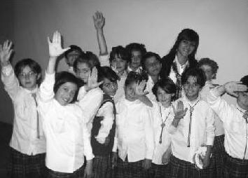

Sildiklerinin bir önemi yok, yerine doğrular yazılmıyorsa, Bildiklerinin bir önemi yok, senden başkası bilmiyorsa'' diye çıktığım bu yolda her geçen gün bilgiyi paylaştıkça, gözlerde oluşan tebessümleri görmenin bu projenin gerçek amacının en belirgin kanıtı olduğunu düşünüyorum (Gamze Güngörür)
Gamze Kayseri'de ışık saçan kırmızı uğur böceğimiz. Uğur Böcekleri Projesi'nin Kayseri'deki koordinasyonunu yürütüyor. Projenin Kayseri'de yürümesi için müthiş çaba sarf etti, sarf etmeye devam ediyor. Gözlerindeki ışık hiçbir zaman kaybolmasın zarif, çalışkan uğur böceğimiz.